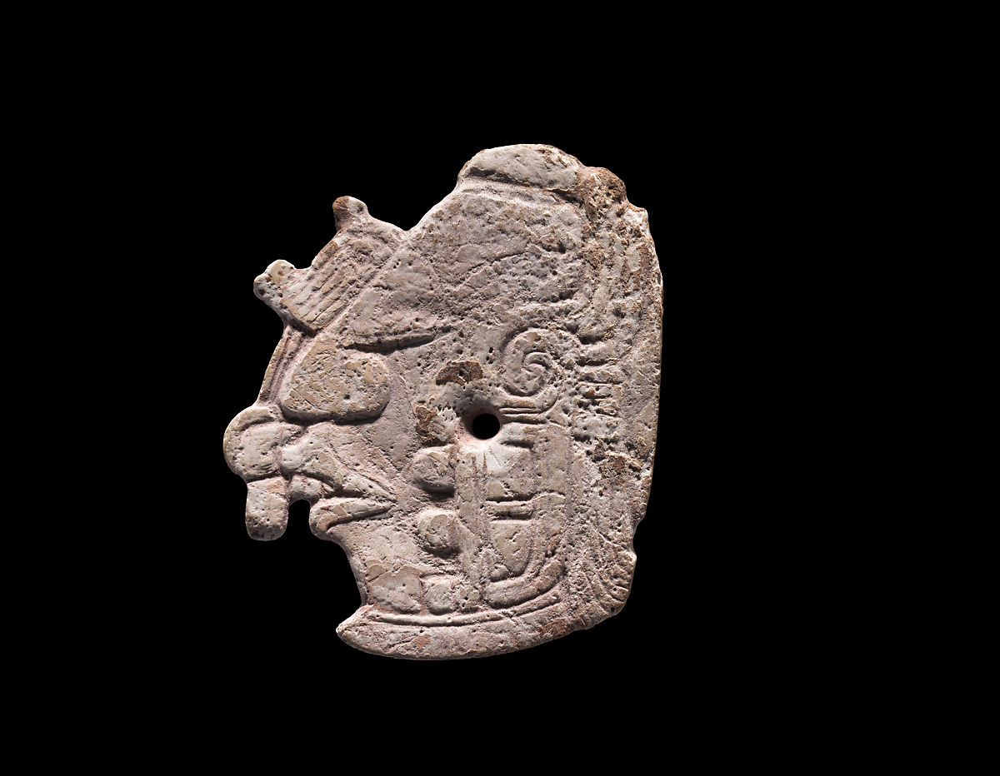
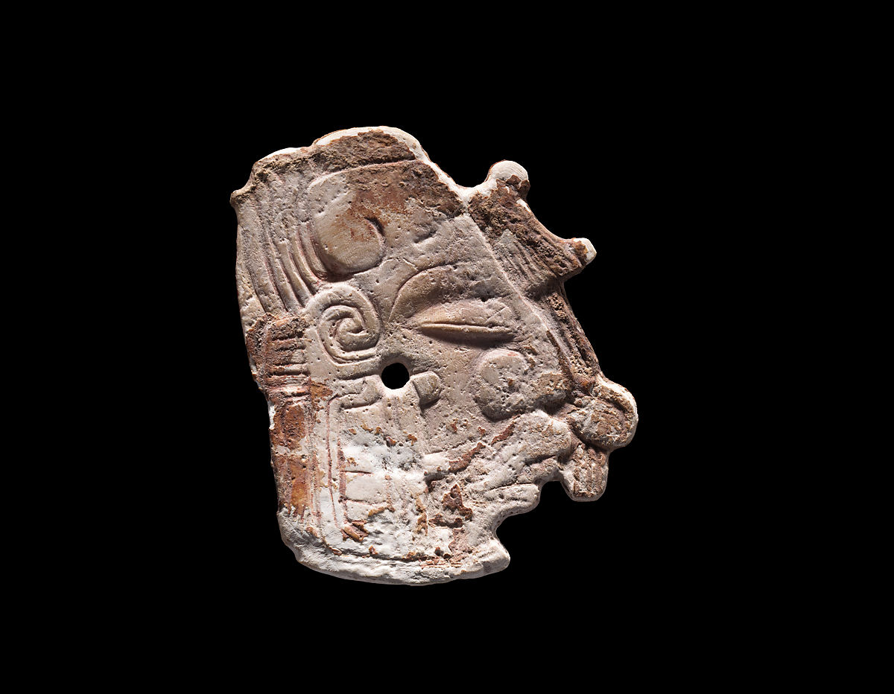
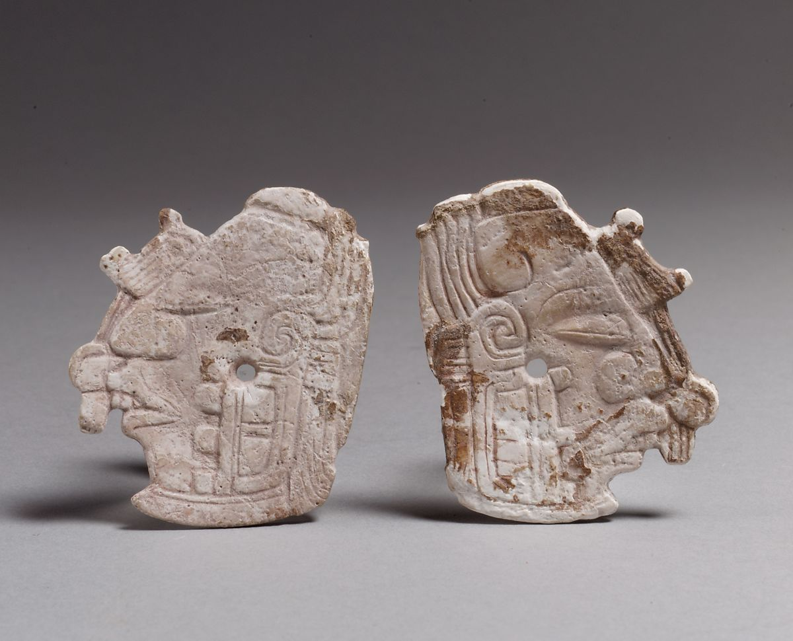

-

- 
- 
- 
Pair of Earflare Frontals
5th–7th century
These delicately carved shell ornaments depict the severed head of the Maize God. They most likely were originally set into the front of a set of earflares (or "earspools"). A bead assemblage, including a frontal bead and beaded counterweights, would have anchored these frontals in place (see examples of earflare assemblages on 1979.206.1047). Shell was a highly valued material for the ancient Maya, and its use here indicates the original owner of these ornaments was of elite status. Their preservation is notable—in the humid jungles of the Lowland Maya region, many organic materials, including shell, disintegrate over time.
The set was clearly designed as a matching pair, but, if one looks closely, one can see that the frontals were carved by different hands. The earflare that faces left exhibits flatter relief and smooth, delicate lines. The composition is balanced, with an open, airy feel. The line-work, including the sweeping curve of the god’s closed eye, is neatly efficient, giving us a sense of the artist’s light, confident touch. The earflare that faces right is also masterfully executed, but the artist appears to have been more interested in creating a greater sense of volume and depth. The eye swells out against its eyelid, and the composition overall feels fleshier and more densely packed. The carved lines are deeper and thicker, and the artist has added an eyebrow and a more dramatically incurving scroll behind the forehead. Under raking light, a few mistakes are visible, the echoes of an errant but energetic carving stroke.
The combination of the sloping forehead, bucktoothed overbite, chinstrap beard, and flowing cornsilk hair (seen both behind the ear and in a jade-beaded forelock that hangs from forehead to mouth) tell us that this is the face of the Maize God. Maize, or corn, was a popular subject for ancient Maya artists (see 1979.206.728). A number of different forms were used to represent different stages in the life cycle of maize, from green, ripening ears, to dead, dried cobs and kernels. Here, we see the Maize God as a ripened, yellow ear of corn. His eyes, closed in death, tell us that he has been decapitated, a ripe ear of maize severed from the stalk.
In ancient art, myth, and contemporary belief, decapitation is strongly associated with the Maize God, his severed head representing a newly harvested ear of corn. Other shell ornaments, depicting the aged or skeletal face of corn, represent the dried corn kernel, a skull-like seed that would be planted (or "buried") in the earth to give rise to a new, green crop. In general, then, Maize God images emphasize the cyclical nature of the cosmos, the continual birth, death, and rebirth of agricultural crops and the intertwined life cycles of deities, who were born, died, and were resurrected, and who were often sacrificed to benefit of mankind.
Maize, one of the most important agricultural products of the ancient Maya world, played a key role in the cosmological layout and mythical foundations of the human world. Humans themselves were thought to have been born from the sacrificed flesh of the Maize God, and the world was envisioned as a four-sided maize field. At the center of this world stood a tree, or axis mundi, which was often conceptualized as a maize stalk. Maya kings frequently displayed aspects of the Maize God in their costuming, declaring themselves the centers of the world, the mythical progenitors of humankind, and the source of agricultural nourishment for their subjects.